Роза ветров
Полоска, проложенная с севера на юг, называлась линией Розы. На протяжении веков символ Розы ассоциировался с картами и проводниками путешественников. Компас Розы, изображенный почти на каждой карте, отмечал, где находятся север, восток, юг и запад Изначально известный как роза ветров, он указывал направление тридцати двух ветров, в том числе восьми основных, восьми половинчатых и шестнадцати четвертичных. Изображенные на диаграмме в виде круга, эти тридцать две стрелки компаса в точности совпадали с традиционным изображением цветка розы из тридцати двух лепестков. По сей день этот главный навигационный прибор известен как компас Розы, где северное направление всегда обозначается наконечником стрелы. Этот символ называли еще fleur-de-lis.
Дэн Браун. Код да Винчи пер. Наталии Рейн
Александр Янин. Ветер
Что такое роза ветров знают, очевидно, все. Метеорологи описывают ее как векторную диаграмму, характеризующую режим ветра в данном месте по многолетним наблюдениям. Но нас интересует другой смысл этого термина. Тот, который формально можно описать как «картографическое обозначение основных географических азимутов сторон горизонта в виде звезды с количеством лучей, кратным четырём». Ее еще называют компасной розой,или розой румбов. Но появилась она задолго до того, как морякам в Европе стал известен компас. Еще в древности все направления горизонта были разделены, иногда симметрично, иногда нет, и дующие с этих направлений ветра получили свои названия. Такое распределение ветров по сторонам горизонта и получило название Роза ветров (Rosa ventorum). И только значительно позже в соответствии с розой ветров получили названия румбы компаса.
Много написано о том, сколько направлений ветра использовалось в древности и какие названия они носили. Разобраться в написанном и упорядочить информацию непросто. Но мы попробуем.
Во времена древних цивилизаций различали всего лишь четыре направления ветра, соответствующие четырем сторонам света: север, восток, запад и юг.
У Гомера эти ветра носят названия: север – Борей (βορέης), восток – Эвр (εὖρος), запад –Зефир (ζέφυρος) и юг – Нот (νότοσ). Некоторые особо дотошные читатели Одиссеи откопали у Гомера еще пару ветров
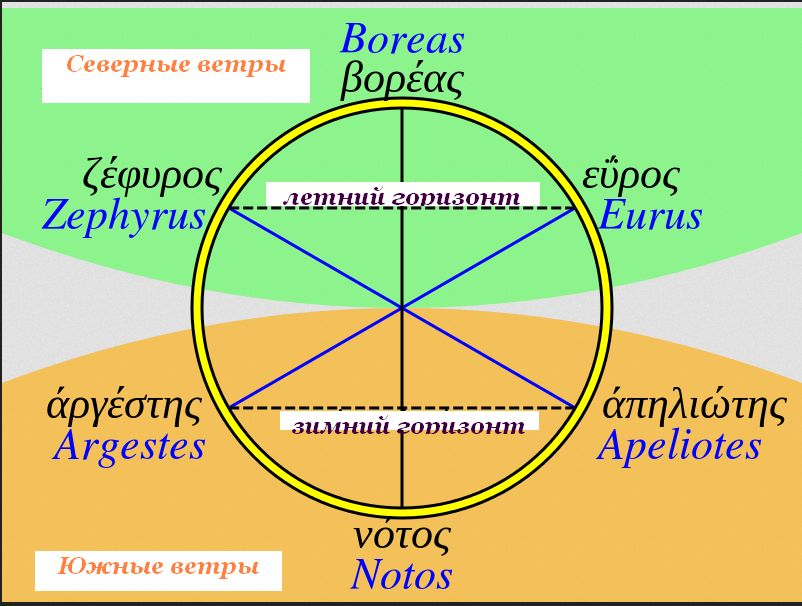
Роза ветров с шестью лучами у Гомера (вариант)
Однако большинство специалистов придерживаются версии с четырьмя ветрами.
Так он сказал и, великие тучи поднявши, трезубцем
Воды взбуровил и бурю воздвиг, отовсюду прикликав
Ветры противные; облако темное вдруг обложило
Море и землю, и тяжкая с грозного неба сошла ночь.
Разом и Эвр, и полуденный Нот, и Зефир, и могучий,
Светлым рожденный Эфиром, Борей взволновали пучину.
Гомер, Одиссея — Песнь пятая (пер. В.А. Жуковский)
Также четыре ветра мы встречаем и в Старом Завете, и в Новом Завете, хотя названия ветров в Библии отличаются от названий у Гомера.
Направления ветров у древних авторов не были строго фиксированными. У Гомера, например, восток и запад смещались на угол до 40° в зависимости от сезона (так что изображенная выше шестилучевая роза ветров у Гомера может быть всего навсего показывает на одной схеме два сезона – летний и зимний). Названия имели локальный характер и менялись в зависимости от географического положения. Хотя некоторые местные названия распространялись довольно широко и становились общеупотребительными для большого региона. Так, итальянское название северо-восточного ветра было Greco, что понятно, так как в этом направлении находилась Греция. Но этот же термин для северо-восточного ветра получил распространение и в Испании, хотя, конечно, этот ветер уже не дул из Греции.
Названия некоторых ветров определялись их направлением, как например, Septentrio, которое употреблялось для северного ветра наряду с Boreas, Arctos или Thrakias. Очевидно, это название было связано с направлением, в котором находятся семь незаходящих околополярных звезд. А название южного ветра Meridies (вместо Notos или Auster) само собой понятно, так как определяется положением, в котором находится полуденное солнце. Также с направлением связаны названия Oriens и Occidens, а также итальянские Levante и Ponente – это всего лишь термины, эквивалентные понятиям восход и закат.В то же время такие названия ветров, как Euros, Auster, Zephuros, Aquilo и Kaikias - это имена собственные, присвоенные ветрам за то. что они имели какие-либо особые свойства, благоприятные или неблагоприятные. Много внимания разъяснению смысла имен, присвоенных ветрам, уделили такие писатели древности, как Страбон, Гиппократ, Анаксимандр и Теофраст.
Постепенно к четырем основным ветрам добавлялись другие. Так, к северу и югу были добавлены по два триплета: с запада и с востока. Получилось восемь ветров, но мы видим, что они не были равноправны и не находились в равном отстоянии друг от друга. Роза ветров с восемью равноотстоящими ветрами – это уже более поздняя концепция.
Аристотель создал модель из двенадцати ветров.
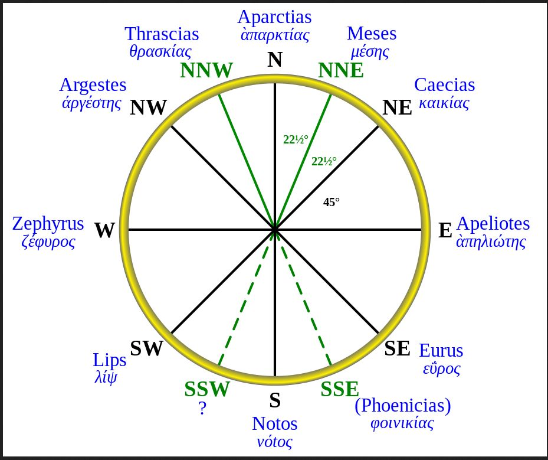
Роза ветров с двенадцатью лучами у Аристотеля (вариант)
Рядом с северным ветром он поместил еще два ветра, по одному с каждой стороны. Получилась такая триада {Thrakias , Aparktias, Boreas}. Так же он поступил и на юге: по обе стороны от южного ветра Notos появились Phoinikias и Libonotos. На востоке появилась триада {Kaikias, Apeliotes, Euros}, а на западе - {Libs, Zephuros, Argestes}.
Изобретение розы ветров с двенадцатью равноотстоящими лучами, известной как Роза Тимосфена, приписывают Тимосфену Родосскому, командовавшему в 280х-270х гг. до н.э. флотом египетского царя Птолемея II Филадельфа, автору перипла в 10 книгах «О портах», не дошедшему до нас. Роза Тимосфена практически без изменений дошла до Средних веков, где она заняла господствующее место на появившихся в ту эпоху Картах мира (Mappamundi), в переизданиях Географии Клавдия Птолемея и многих другий трактатах по географии.
Начало использования компаса в навигации и перенос существующих в розе ветров направлений на румбовые линии компаса сразу же выявили недостаточость их количества для точной навигации. Казалось бы столь популярная роза ветров с 12 лучами должна стать основой для дальнейшего усовершенствования путем кратного увеличения числа лучей. Однако здесь сработал другой принцип: усложнение через упрощение. Сначала обратились к восьми румбам, а затем пошло их удвоение до 16 и 32 лучей. Начиная с XIII века морские картографы стали делить горизонт на восемь, шестнадцать и тридцать два направления.
Первое известное изображение восьмиконечной розы ветров в печатной книге мы находим в миланском издании 1521 года дидактической поэмы итальянского астронома Чекко д’Асколи «L’Acerba».
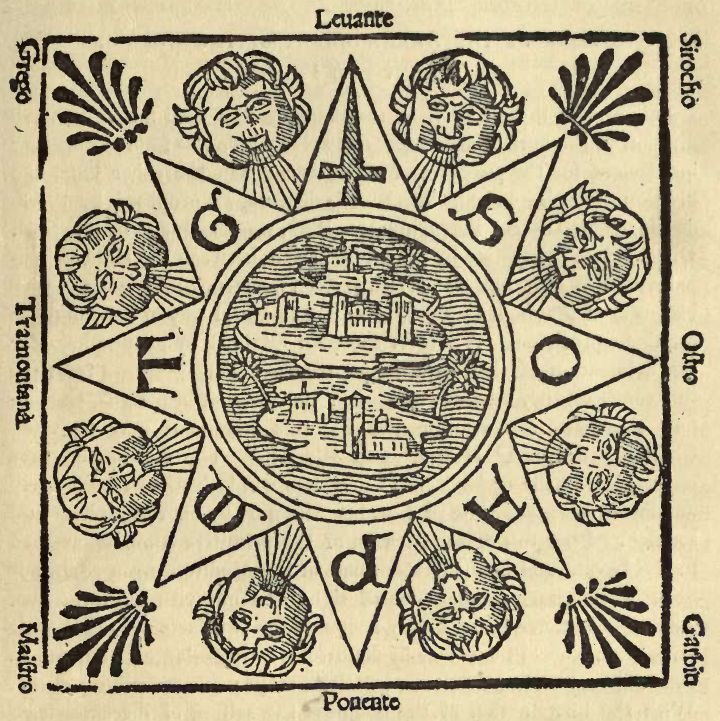
Восьмиконечная роза ветров у CECCO D'ASCOLI. 1521.
Восемь ветров имеют итальянские названия и отмечены готическими начальными буквами этих названий и «дующими головами» восьми херувимов.
Традиция размещать херувимов в медальонах или в окружностях на тех местах, где румбовые линии достигают полей карты имела корни в глубокой истории портолан-карт. Примером может служить портолан-карта 1380 г. картографа с Майорки Гилельмо Солери (Guillelmo Soleri),
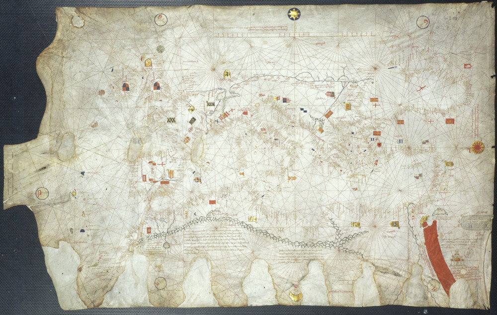
Портолан-карта Гильльмо Солери (1380), La Bibliothèque nationale de France
На этой карте север (Tramuntana) отмечен золотой восьмиконечной звездой
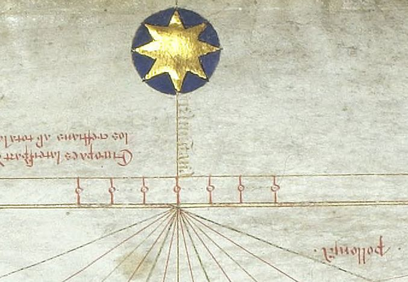
восток (Levant ) – восходящим солнцем
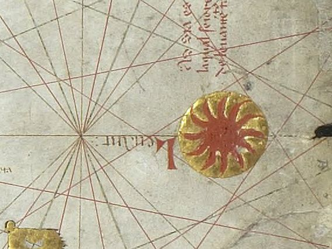
юг (Migiorno) – лицом в профиль,
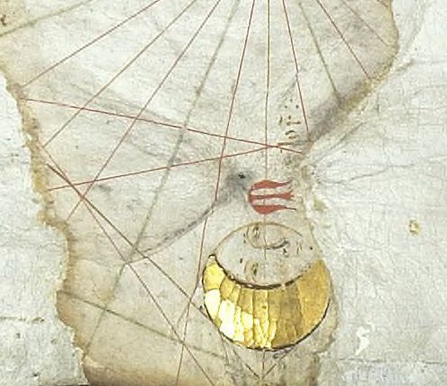
остальные направления – Greek, Axaloch, Labetes, Ponent и Mestra – написаны готическим стилем в кругах.
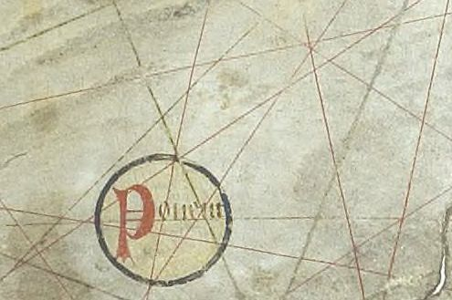
Примерно такие же обозначения имелись и на других портолан-картах. Север отмечали стрелой, полярной звездой или семью незаходящими звездами,
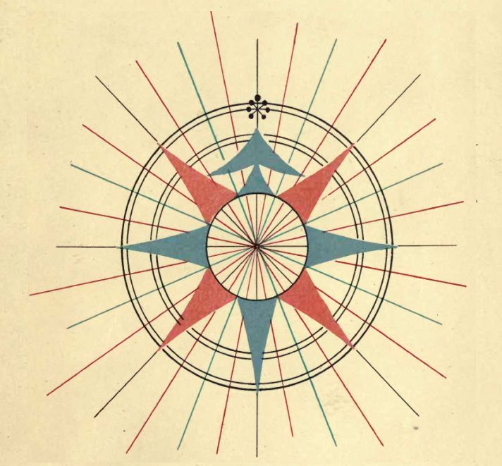
Обозначение севера на портолан-карте Роселли, 1465 г.
а позже – изображением геральдической лилии (fleur-de-lis) . Восток почти всегда отмечали крестом.
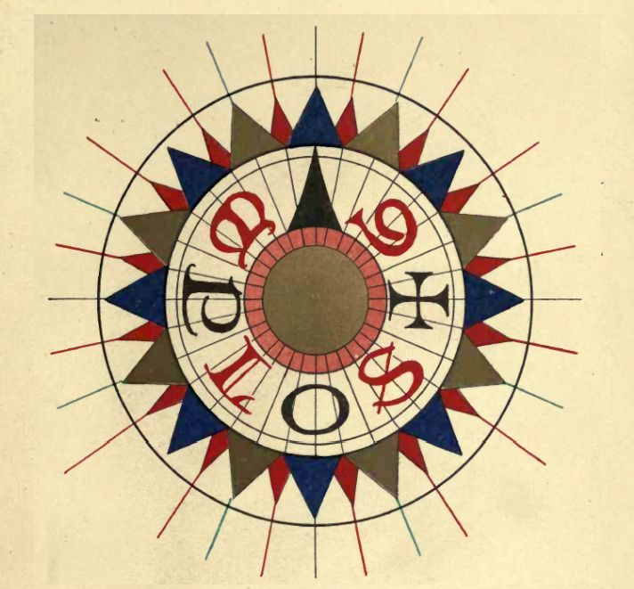
Joannes Martines, 1567.
Запад иногда изображали в виде заходящего солнца.
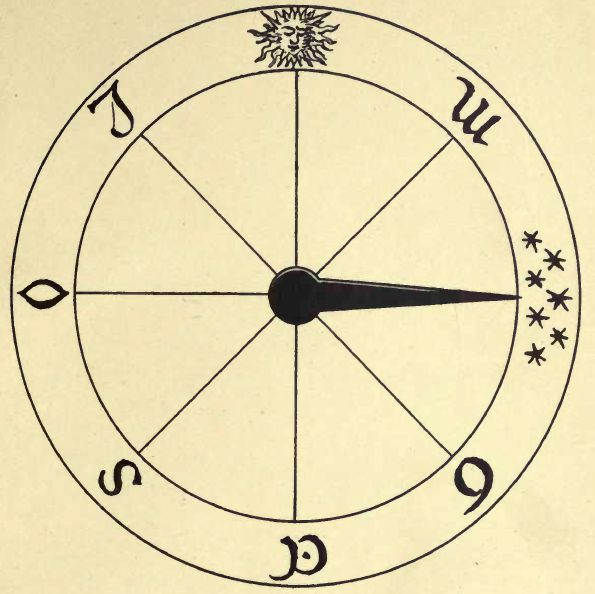
Giovanni Quintino. Венеция, 1545.
Компасные розы, изображенные на так называемой Mappamundi 1500 года, автором которой был штурман Колумба в плавании 1493 года Хуан де ла Коса
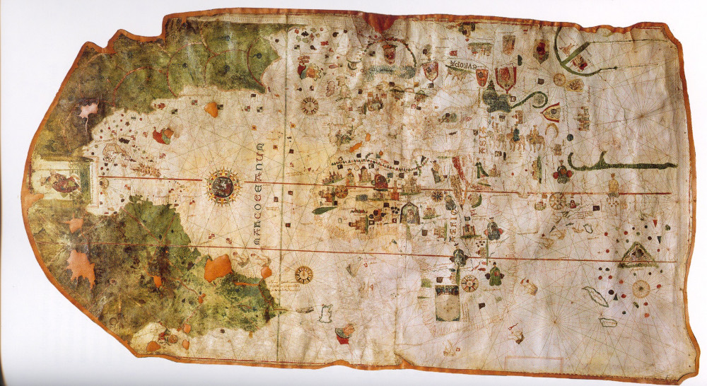
не имели никаких знаков или начальных буква на северном румбе, всего лишь черная стрела из центра розы указывала нужное направление.
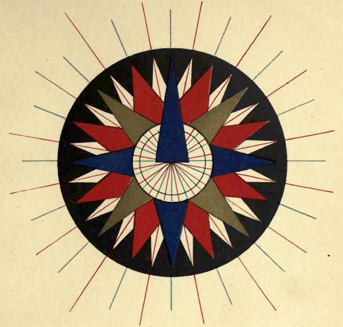
Стрела, видимо, не произвольный символ для северного ветра. Как и Полярная звезда. Достаточно взглянуть на гравюру из книги итальянского художника Марко Боскини La Carta del navegar pitoresco (Венеция, 1660),
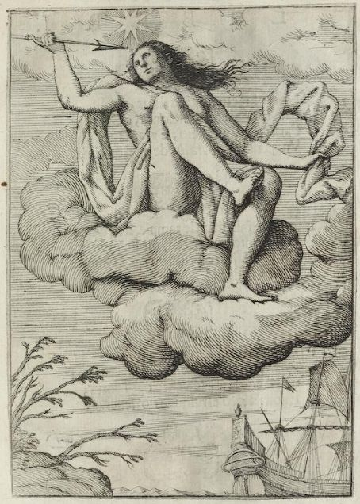
и понять, что женщина – аллегория северного ветра – не случайно изображена под знаком восьмиконечной звезды и с дротиком в руке.
Хотя были порой варианты в названиях различных ветров, три из них не менялись никогда: G – греко (северо-восточный ветер), S – сирокко (юго-восточный) и M – маэстро (северо-западный).
Традиция помещать в центрах пересечения румбовых линий богато раскрашенную розу ветров соблюдалась, начиная с 1375 года, после первого появления компасной розы на портолан-карте из Каталанского атласа.
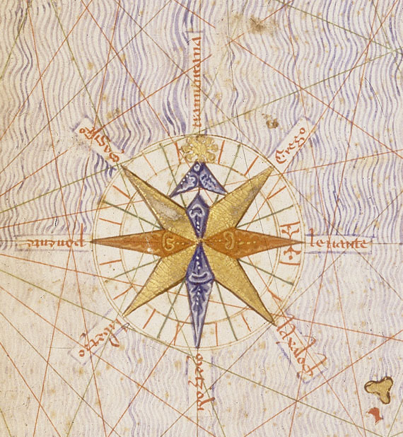
Как правило, сохранялось и соответствие в раскраске румбов розы ветров с румбовыми линиями: черный цвет для главных ветров, зеленый – для половинных и красный – для четвертных.
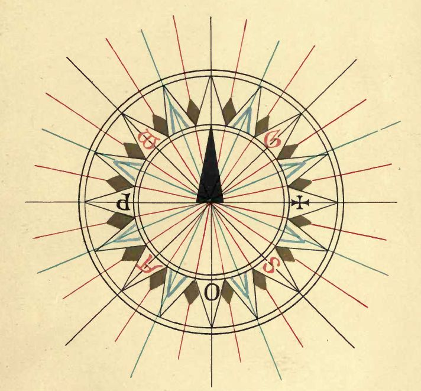
Роза ветров с портолан-карты 1540 года.
Много еще чего интересного можно рассказать о традиции украшать портолан-карты розами ветров. Отдельного поста заслуживает, например, традиция использовать геральдическую лилию для обозначения севера. Но надо и честь знать. Остановимся, с тем чтобы в следующий раз перейти к основному вопросу из истории портолан-карт: использовались ли они в практической навигации на борту корабля, находящегося в открытом море, а если использовались - то как.